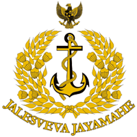

Data Utama
Halaman ini menggunakan tag dasar untuk menstrukturkan informasi:
- Teks tebal untuk penekanan.
- Daftar tak berurutan (bullet points) untuk rincian data.
- Tag paragraf untuk teks biasa.
NEGARA MEMANGGILMU! Ayo.Daftarkan DirimuSegera.
Jadwal Penerimaan Calon Prajurit TNI
Semangat belajar yah sam!

TARUNA AKADEMI TNI

PA PSDP
PA PK TNI REGULER GEL. I